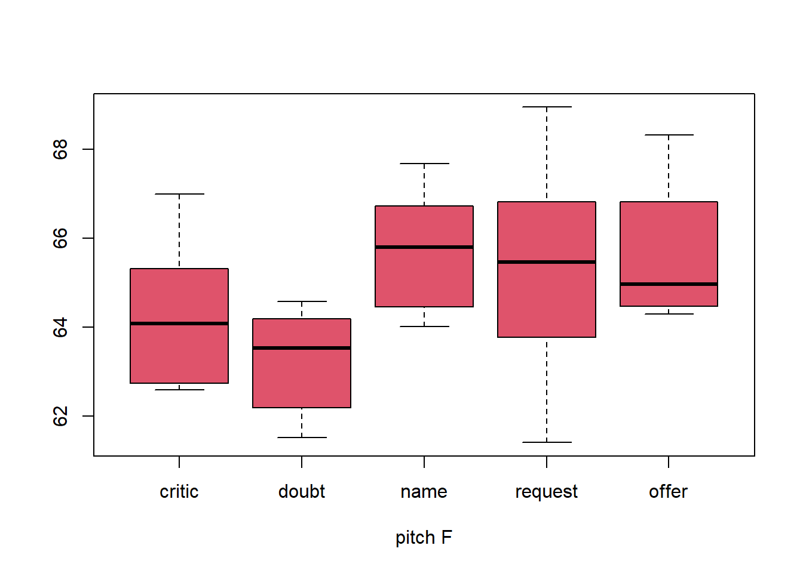
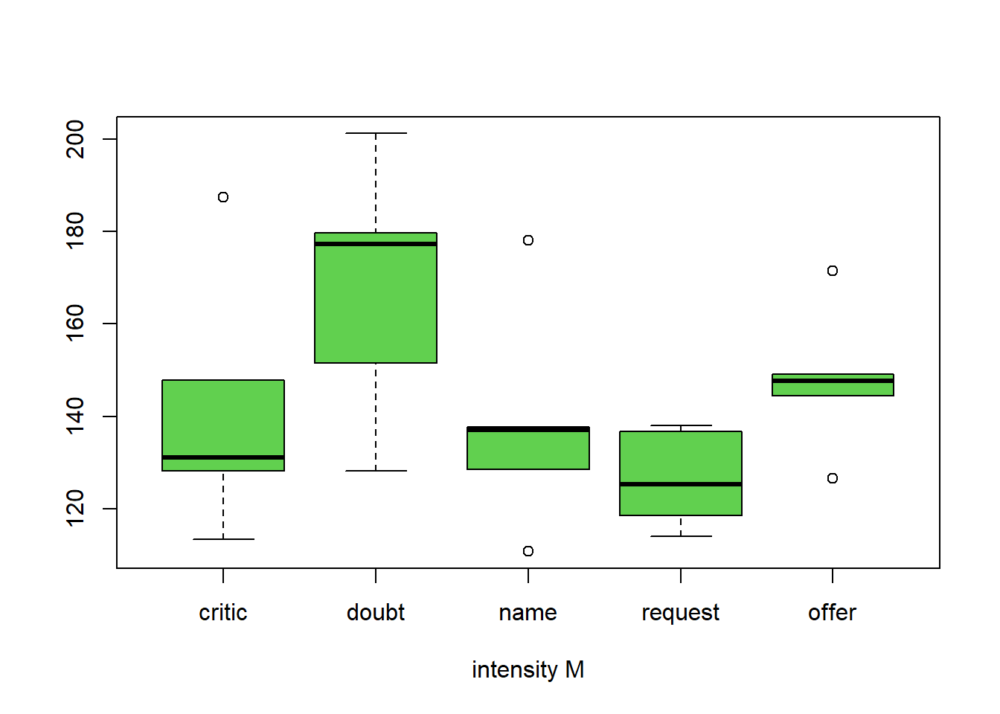
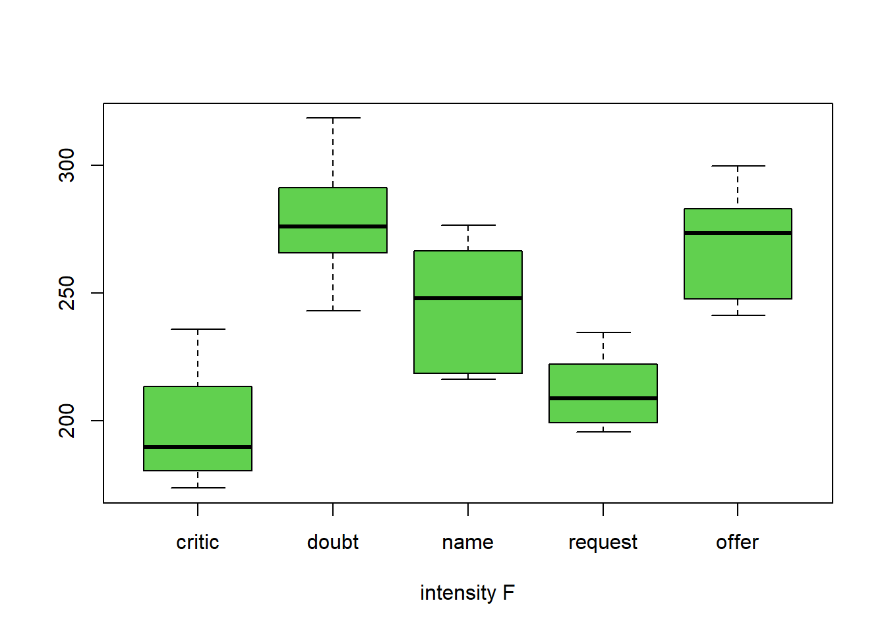

NPRG audio analysis
st.
2023-02-07 06:35:29
#print(head)
# utest<-"[ani lo sonderzeichentest אני לאaäoöuüÄÖÜß]"
# utest<-chr_unserialise_unicode(utest)
# print(utest)1 HEAD
NEUROPRAGMATIK audioanalysis
2 the test
2.1 abstract
wir haben 2x5x6 audioaufnahmen von jeweils 6 items (wörtern) in 5 conditionen (aussprachevarianten) von zwei sprechern aufgenommen (m,f). in praat wurden pitch und intensity analysiert, die durchschnittliche länge der aufnahmen betrug 0.486 msec.
praat analysis screenshot
2.2 methode:
6 wörter: bier, glas, hammer, kebab, pizza, stift
5 conditions: critic, doubt, name, offer, request
die wörter sollten von den participants unter vorstellung der jeweiligen situation (condition) ausgesprochen werden.
3 evaluation
3.1 raw data presentation
dataset: 60 observations.
| pitch_m | pitch_f | int_m | int_f | |
|---|---|---|---|---|
| critic | 61.15 | 64.30 | 141.56 | 197.17 |
| doubt | 60.44 | 63.25 | 167.64 | 278.42 |
| name | 64.26 | 65.74 | 138.38 | 245.65 |
| request | 63.57 | 65.31 | 126.50 | 211.57 |
| offer | 64.49 | 65.64 | 147.88 | 269.78 |
wir sehen im durchschnitt der werte, dasz der minimum pitch bei m/f bei der condition ‘doubt’ zu finden ist und an dieser condition auch die maximale intensity. maximum pitch und minimum intensity unterscheiden sich inter-speaker.
| SD_pitch_m | SD_pitch_f | SD_intensity_m | SD_intensity_f | |
|---|---|---|---|---|
| critic | 2.58 | 1.66 | 28.47 | 23.65 |
| doubt | 1.64 | 1.17 | 28.25 | 25.38 |
| name | 2.24 | 1.41 | 24.73 | 24.74 |
| request | 3.75 | 2.70 | 10.70 | 15.25 |
| offer | 1.85 | 1.62 | 16.04 | 22.03 |
die standardabweichung ist bei pitch(m) mit 3.75 am höchsten bei request und bei pitch(f) mit 2.7 am höchsten bei request; für intensity gilt 28.47 bei critic(m) und 25.38 bei doubt(f). die summen der standardabweichung (m)/(f) sind mit 0.64 punkten unterschied bei ~120 punkten ungefähr gleich.



